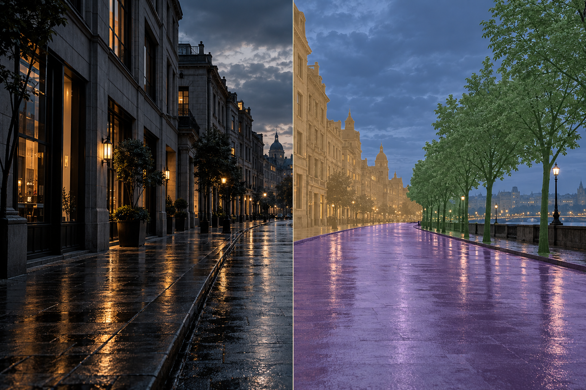
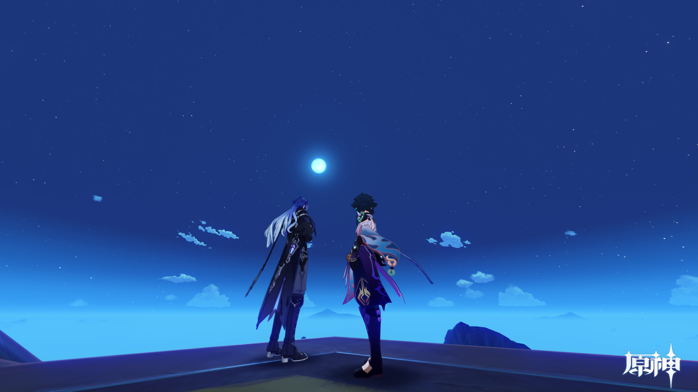
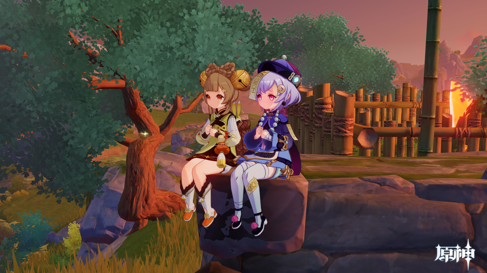
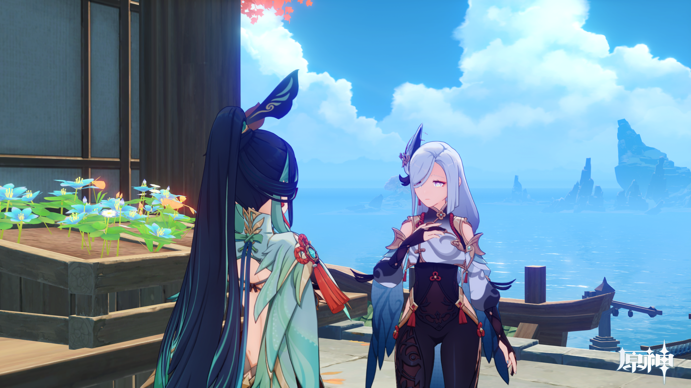
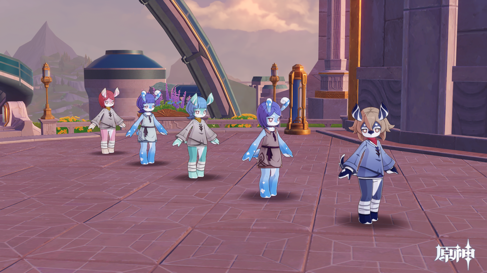
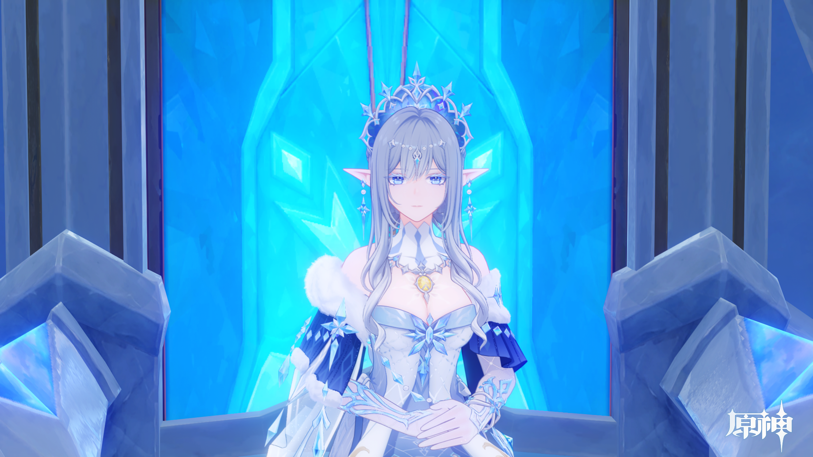

01 / COMPUTATION
算法探索
从像素出发，关注画面的识别、理解与重建。
- 关注方向
- 计算机视觉 / 目标检测 / 图像超分辨率
- 工具与框架
- Python / PyTorch / OpenCV
ABOUT / 关于我
CELESTE · TWO WAYS OF SEEING你好，我是 Celeste。
算法工程师，也是摄影师。
我用代码探索画面背后的规律，也用影像留下值得停留的瞬间。
对我来说，算法与摄影共享着同一份好奇：如何看见细节，又如何理解整个画面。从真实世界到虚拟场景，光影、色彩与构图，都是观察的起点。
Celeste.在代码与光影之间
SELECTED EXPLORATIONS / 01—03
算法探索 · Computer Vision
从识别画面中的目标，到看清被忽略的细节。
01 PERCEPTION
目标检测 / Object Detection
在复杂的街景中定位车辆与行人，让画面中的目标拥有清晰的边界。探索场景理解与视觉感知的表达方式。
关注目标定位、类别识别与检测结果的可视化。当前画面使用 AI 生成街景，边框为手工布置的视觉示意；真实模型结果与项目资料将在后续补充。
02 RESTORATION
图像超分辨率 / Super Resolution
从屋檐的轮廓，到木纹的肌理，关注图像中的微小细节。探索清晰度、纹理与视觉观感之间的关系。
当前对比由同一张 AI 概念图及其柔化版本构成，仅用于展示交互与视觉风格，并非模型重建结果。可拖动分界线，或聚焦画面后使用方向键调整。

03 SEGMENTATION
语义分割 / Semantic Segmentation
从识别目标到理解区域，为画面中的像素赋予语义类别。探索道路、建筑与植被之间的边界，让场景结构逐渐清晰。
关注像素级分类、区域边界与场景解析。当前街景及彩色分区均由 AI 生成，作为语义分割的视觉概念示意，并非模型预测或精确标注；真实项目、模型与评估结果将在后续补充。
概念展示 / 图片由 AI 生成，检测框、清晰度对比与语义分区均为视觉示意。真实项目成果待补充。
VISUAL JOURNAL / PHOTOGRAPHY
在不同的世界里，寻找同样动人的光。
关于陪伴、色彩，以及那些值得停留的片刻。

Featured / 01
让天空多留一点。
让同行的人，成为画面的重心。




Screening / 02
从日落到星夜，
把沿途的光，与你分享。
ELSEWHERE / 我的频道
代码与光影之外，
也留一些空间，分享日常。
GET IN TOUCH / 联系我